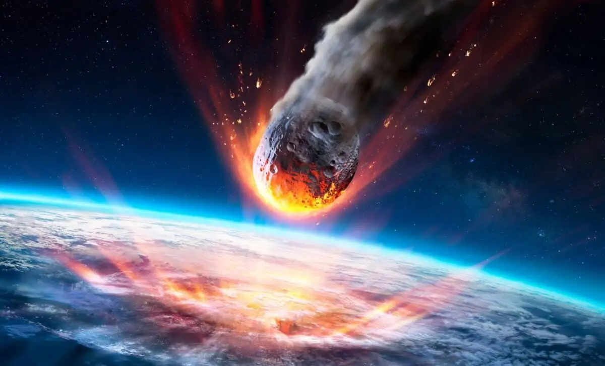
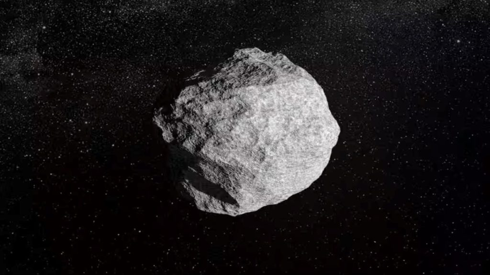
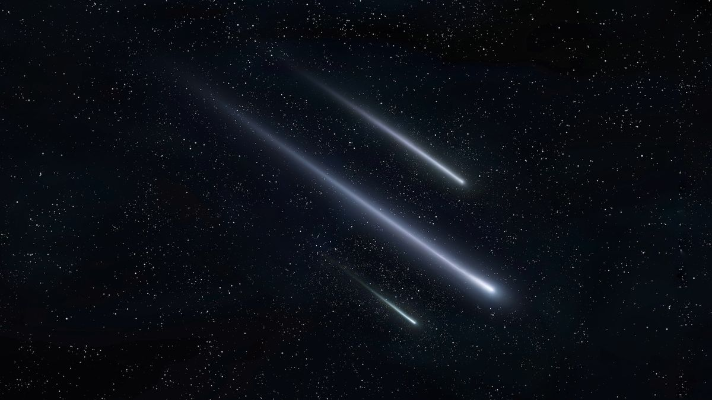

Meteor

1. What is a Meteor? (උල්කාපාතයක් යනු කුමක්ද?)
අභ්යවකාශයේ සිට පෘථිවි වායුගෝලයට ඇතුළු වන කුඩා පාෂාණ හෝ ලෝහමය වස්තූන් උල්කාපාත ලෙස හැඳින්වේ. අධික වේගයෙන් ගමන් කිරීමේදී වාතය සමඟ ඇති වන ඝර්ෂණය නිසා මේවා දැවී දීප්තිමත් ආලෝක ධාරාවක් ඇති කරයි. මේවා සාමාන්ය ව්යවහාරයේදී "කඩා වැටෙන තරු" (Shooting Stars) ලෙසද හඳුන්වයි.
2. The Three Stages
- Meteoroid: අභ්යවකාශයේ ගමන් කරන කුඩා පාෂාණ කැබලි.

- Meteor: වායුගෝලයට ඇතුළු වී දැවෙන විට පෙනෙන ආලෝක ධාරාව.

- Meteorite: වායුගෝලයේදී සම්පූර්ණයෙන් දැවී නොගොස් පෘථිවියට පතිත වන කොටස්.

3. Types of Meteorites
- Stony Meteorites: සිලිකේට් ඛනිජ වලින් සැදුම්ලත් වඩාත් බහුල වර්ගයයි.
- Iron Meteorites: ප්රධාන වශයෙන් යකඩ සහ නිකල් වලින් සමන්විත ඉතා බර වර්ගයකි.
- Stony-Iron Meteorites: ලෝහ සහ පාෂාණ යන දෙවර්ගයේම මිශ්රණයක් සහිත දුර්ලභ වර්ගයකි.
4. Meteor Showers (උල්කාපාත වර්ෂා)

පෘථිවිය වල්ගා තරුවක් විසින් ඉතිරි කර ගිය දූවිලි හා පාෂාණ කොටස් අතරින් ගමන් කරන විට උල්කාපාත වර්ෂා ඇති වේ. මෙහිදී අහසේ එකම ස්ථානයක සිට උල්කාපාත රාශියක් කඩා වැටෙනු දැකගත හැකිය. (උදා: Perseids සහ Geminids වර්ෂා).
5. Quick Facts Summary
| Feature | Description |
|---|---|
| Speed (වේගය) | තත්පරයට කිලෝමීටර් 11 සිට 72 දක්වා |
| Altitude (උස) | කිලෝමීටර් 75-100 අතරදී දැවී යයි |
| Size (ප්රමාණය) | වැලි කැටයක සිට විශාල පර්වත දක්වා |